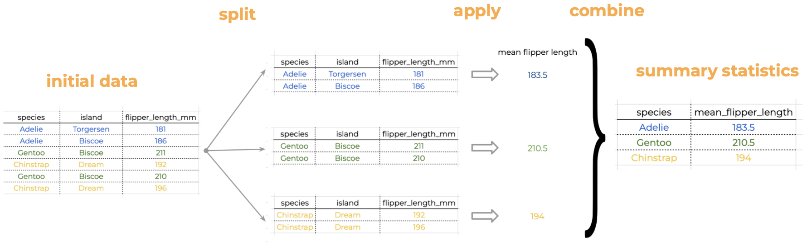
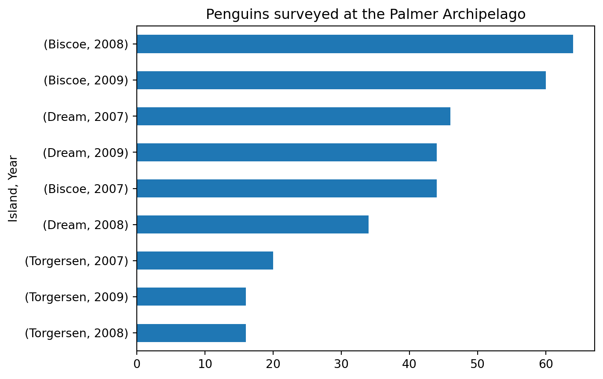

By the end of this lesson students will be able to:
Understand and apply the Split-Apply-Combine strategy to analyze grouped data.
Use groupby() to split a pandas.DataFrame by one or more columns.
Calculate summary statistics for groups in a pandas.DataFrame.
Use method chaining for efficient data analysis.
About the data
For this section we will use the Palmer Penguins dataset [2] developed by Drs. Allison Horst, Alison Hill and Kristen Gorman. This dataset contains size measurements for three penguin species in the Palmer Archipelago, Antarctica during 2007, 2008, and 2009.
The Palmer Archipelago penguins. Artwork by Dr. Allison Horst.
The dataset has 344 rows and 8 columns. Let’s start by loading the data:
import numpy as npimport pandas as pd# Load Palmer penguins dataURL ='https://raw.githubusercontent.com/allisonhorst/palmerpenguins/main/inst/extdata/penguins.csv'penguins = pd.read_csv(URL)penguins.head()
species
island
bill_length_mm
bill_depth_mm
flipper_length_mm
body_mass_g
sex
year
0
Adelie
Torgersen
39.1
18.7
181.0
3750.0
male
2007
1
Adelie
Torgersen
39.5
17.4
186.0
3800.0
female
2007
2
Adelie
Torgersen
40.3
18.0
195.0
3250.0
female
2007
3
Adelie
Torgersen
NaN
NaN
NaN
NaN
NaN
2007
4
Adelie
Torgersen
36.7
19.3
193.0
3450.0
female
2007
Summary statistics
It is easy to get summary statistics for each column in a pandas.DataFrame by using methods such as
sum(): sum values in each column,
count(): count non-NA values in each column,
min() and max(): get the minimum and maximum value in each column,
mean() and median(): get the mean and median value in each column,
std() and var(): get the standard deviation and variance in each column.
Example
# Get the number of non-NA values in each column penguins.count()
species 344
island 344
bill_length_mm 342
bill_depth_mm 342
flipper_length_mm 342
body_mass_g 342
sex 333
year 344
dtype: int64
# Get minimum value in each column with numerical valuespenguins.select_dtypes('number').min()
Our penguins data is naturally split into different groups: there are three different species, two sexes, and three islands. Often, we want to calculate a certain statistic for each group. For example, suppose we want to calculate the average flipper length per species. How would we do this “by hand”?
We start with our data and notice there are multiple species in the species column.
We split our original table to group all observations from the same species together.
We calculate the average flipper length for each of the groups we formed.
Then we combine the values for average flipper length per species into a single table.
This is known as the Split-Apply-Combine strategy. This strategy follows the three steps we explained above:
Split: Split the data into logical groups (e.g. species, sex, island, etc.)
Apply: Calculate some summary statistic on each group (e.g. average flipper length by species, number of individuals per island, body mass by sex, etc.)
Combine: Combine the statistic calculated on each group back together.

Split-apply-combine to calculate mean flipper length
For a pandas.DataFrame or pandas.Series, we can use the groupby() method to split (i.e. group) the data into different categories.
The general syntax for groupby() is
df.groupby(columns_to_group_by).summary_method()
Most often, we will have that columns_to_group_by will be a single column name (a string) or a list of column names. The unique values of the column (or columns) will be used as the groups of the data frame.
Example
If we don’t use groupby() and directly apply the mean() method to our flipper length column, we obtain the average of all the values in the column:
penguins['flipper_length_mm'].mean()
200.91520467836258
To get the mean flipper length by species we first group our dataset by the species column’s values. However, if we just use the groupby() method without specifying what we wish to calculate on each group, not much happens up front:
penguins.groupby('species')['flipper_length_mm']
<pandas.core.groupby.generic.SeriesGroupBy object at 0x149eda550>
We get a GroupBy object, which is like an intermediate step. It doesn’t perform the actual calculations until we specify an operation:
# Average flipper length per speciespenguins.groupby('species')['flipper_length_mm'].mean()
Let’s recap what went on in that line (remember the . can be read as “and then…”):
start with the penguins data frame, and then…
use groupby() to group the data frame by species values, and then…
select the 'flipper_length_mm' column, and then…
calculate the mean() of this column with respect to the groups.
Notice that the name of the series is the same as the column on which we calculated the summary statistc. We can easily update this using the rename() method:
# Average flipper length per speciesavg_flipper = (penguins.groupby("species") .flipper_length_mm .mean() .rename('mean_flipper_length') .sort_values(ascending=False) )avg_flipper
We want to know what was the number of penguins surveyed in each island on different years. We can use the count() method to count the number of non-NA values in each column like this:
penguins.count()
species 344
island 344
bill_length_mm 342
bill_depth_mm 342
flipper_length_mm 342
body_mass_g 342
sex 333
year 344
dtype: int64
When we group by island and year we get the count of non-NA values for each column across each combination of island and year:
penguins.groupby(['island','year']).count()
species
bill_length_mm
bill_depth_mm
flipper_length_mm
body_mass_g
sex
island
year
Biscoe
2007
44
44
44
44
44
43
2008
64
64
64
64
64
63
2009
60
59
59
59
59
57
Dream
2007
46
46
46
46
46
45
2008
34
34
34
34
34
34
2009
44
44
44
44
44
44
Torgersen
2007
20
19
19
19
19
15
2008
16
16
16
16
16
16
2009
16
16
16
16
16
16
Let’s say we want to plot the surveyed population per year and island. We could then use method chaining to do this:
(penguins.groupby(['island','year']) .count() .species .sort_values() .plot(kind='barh', title='Penguins surveyed at the Palmer Archipelago', ylabel=('Island, Year')) )

Check-in
Use the max() method for pandas.DataFrames to calculate the maximum value of a penguin’s body mass by year and species.
Use (1) to display the highest body masses per year and species as a bar plot in descending order.
References
[1]
H. Do-Linh, C. Galaz García, M. B. Jones, and C. Vargas Poulsen, Open ScienceSynthesis training Week 1. NCEASLearningHub & DeltaStewardshipCouncil. 2023. Available: https://learning.nceas.ucsb.edu/2023-06-delta/